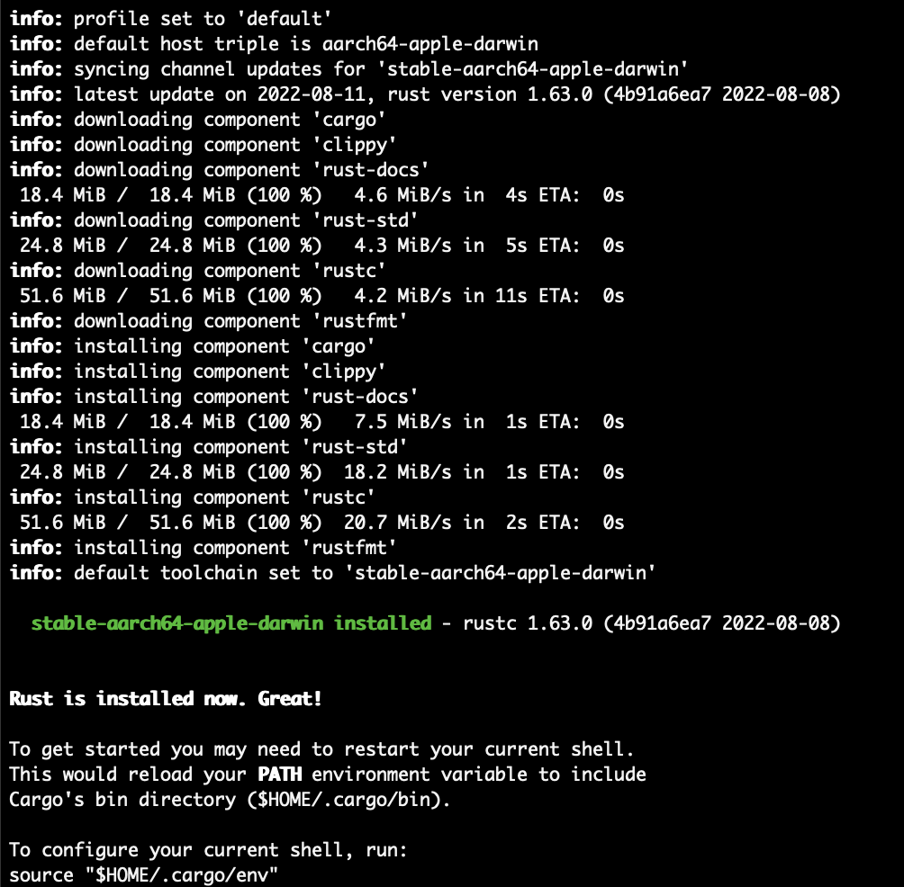
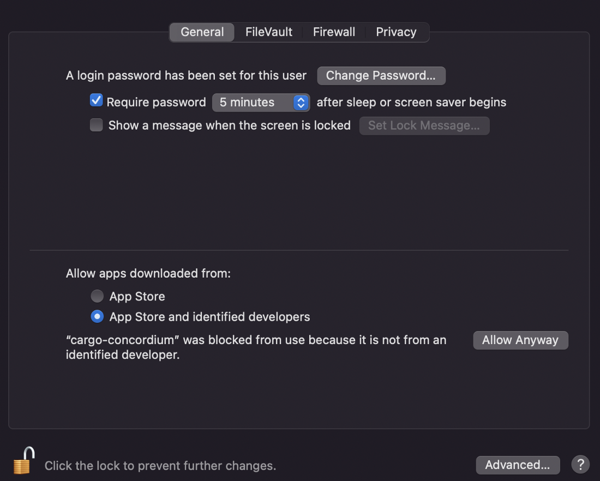
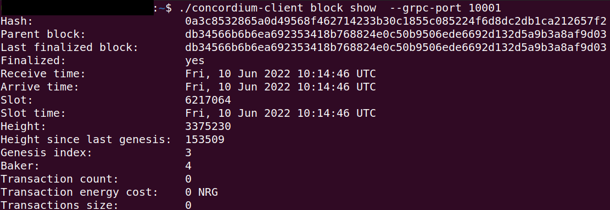

Setup the development environment#
Before starting the smart contract tutorials, you must prepare your development environment by installing a number of tools. This topic covers the setup required for the tutorials.
Note
You can also watch a video about installing the smart contract tools.
First, you need to install rustup which installs Rust and Cargo to your computer. Go to Rustup to install rustup for your platform.
Type 1 to continue the installation.

Finally, when Rust and Cargo are successfully installed in your system, you should see something similar to below.
Note
Currently, Rust toolchain versions up to 1.81 are and newer are not supported by older cargo-concordium versions ( <= 4.0.0). Update cargo-concordium if you see the error Unexpected byte 0x80. Expected 0x00 as follows:
$ cargo install cargo-concordium
$ cargo concordium --version
$ cargo-concordium 4.1.1
The minimum supported rust version is currently version 1.73
Copy and paste the commands in a terminal to install Wasm which will be used for building contracts.
rustup target add wasm32-unknown-unknown
During Wasm installation in your system you should see something similar to below.

Now you need to install the Concordium software package. cargo-concordium is the tool for developing smart contracts for the Concordium blockchain. It can be used for compiling and testing smart contracts, and enables features such as building contract schemas. Click here and download the version 2.2.0 or greater of cargo-concordium for your operating system. The tool is the same for both testnet and mainnet.
Note
If you are not using Ubuntu/Linux as your operating system, the following screenshots and commands will be different. Remember to adjust the following commands based on your operating system.
To install cargo-concordium run:
$cargo install --locked cargo-concordium
For a description of how to use the cargo-concordium run:
$cargo concordium --help
To use verifiable builds with cargo-concordium a container runtime such as Docker is required.

Note
If you have a warning on a Mac device that says “cargo-concordium cannot be opened because the developer cannot be verified” that means it requires permission to run and you should go to System Preferences → Security and unlock it with your password and click Allow Anyway.
Download and run Concordium Client#
The concordium-client tool allows you to interact with a Concordium node. The tutorials use concordium-client as a command line tool to deploy, mint, and transfer. The tools is available for Windows, Mac, and Linux. Download it for your operating system here. You find documentation of important commands that the concordium-client tool provides here.
Rename the package to concordium-client in case it has some version annotation. Go to the folder where you downloaded the concordium-client. You can check if you are in the correct folder when you see the output concordium-client from the command:
$ls | grep 'concordium-client'

Note
Alternatively, if you don’t want to navigate around in the folders, you can add the folder where the concordium-client tool is located to your PATH variable with the command:
export PATH="$HOME/path/to/your/concordium-client:$PATH".
This allows you to use the following commands (such as concordium-client --help)
without prepending them with ./. Effectively, prepending with ./
searches for the executable package in the current directory while
omitting ./ searches for the executable package in the PATH variable.
The macOS distribution is an installer that places an alias to the binary into the folder /usr/local/bin. So after installing, you should have concordium-client on your path.
On MacOS or Linux, access the command line with the Terminal application. On Windows, use the Power Shell or Command Prompt application. If you run it outside of the command line (e.g., by double clicking in Windows Explorer), then the Concordium Client will exit immediately without doing anything useful.
Before you can use the downloaded Concordium Client on Linux you have to make the downloaded file executable. Run the following command to make the file you download executable:
$chmod +x concordium-client

Check whether you can execute the concordium-client tool.
$./concordium-client --help
You should see some output that will help you in getting familiar with the concordium-client tool.

Your next task enables the concordium-client tool to talk to a testnet node. There are two options to achieve this:
Option 1 (beginners)
This option explains how to transfer the concordium-client tool to your instance and execute commands from within the instance.
Advantage: You can execute the commands within your instance.
Disadvantage: You have to transfer files between your local machine and your instance.
Transfer the concordium-client package from your machine via a file-sharing tool (such as FileZilla or the sftp command) to your instance.
Connect to your instance and make your package executable again as you have done previously already:
$chmod +x concordium-client
Check if everything is connected correctly by displaying the best/latest block.
$./concordium-client block show --grpc-port 20001
You should see some block data output.
Note
Port 20001 is open by default on your testnet node to interact with it.
Option 2 (advanced users)
This option explains how you can use the concordium-client tool locally on your machine and connect remotely to your node running on the server.
Advantage: You don’t have to transfer files between your local machine and your instance later in the tutorial.
Disadvantage: You have to use ssh with port forwarding when you run a command locally.
Since you have a remote server your cloud provider usually gives you an option to ssh into it. Add the following port forwarding rule to your method to ssh into your instance in terminal A. The port 20001 on your localhost is forwarded to the port 20001 on your instance.
$ssh -NL localhost:20001:<IP-address-of-your-instance>:20001 <username>@<host>

Note
Port 20001 is open by default on your testnet node to interact with it. Cloud providers often use ubuntu as the default <username> and the <IP-address-of-your-instance> as the default <host>.
Go in another terminal B to the folder where you downloaded the concordium-client. Check if everything is connected correctly by displaying the best/latest block.
$./concordium-client block show --grpc-port 20001
You should see some block data output.

Concordium node on Testnet#
For the purposes of these tutorials and for testing, a node is available on testnet to use when testing smart contracts and dApps so you do not need to run your own node. You can use this node for API calls of chain methods only with gRPC v2 and gRPC web. The address is grpc.testnet.concordium.com on port 20000 (gRPCv2 and gRPC-web). You can use this node for API calls of chain methods only. This node is maintained by Concordium, but Concordium does not guarantee availability. The status of this node is available on the Testnet status page.
If you wish to run your own node, see Run a node on Concordium.
Setup a wallet#
Now you need a Concordium wallet. Use the Concordium Wallet for Web. The Concordium Wallet for Web uses a 24 word secret recovery phrase to secure your wallet. Make sure to protect your 24 word secret recovery phrase and store it in a secure place. Anyone who knows the secret recovery phrase can access your wallet.
Use this link to install a Concordium Wallet for Web in a chromium web browser. Follow these instructions to install the extension. Configure it to run on testnet with an identity created from the Concordium testnet IP (shown below) and an account based on that identity. You don’t have to provide an ID to create an identity on testnet when selecting Concordium testnet IP. Test identities are meant for testnet testing only.
Use the Testnet faucet in your account to claim 2000 CCDs for testing purposes.

One thing to note is that if you click  , you enter a transaction window. This allows you to transfer CCDs. You can type the amount of CCD and the recipient’s address in this section. As you can see just below those textboxes, there is a value highlighting the “Estimated transaction fee” in CCD terms. This allows you to estimate the costs beforehand and it allows helps you to calculate your business expenses in the future.
, you enter a transaction window. This allows you to transfer CCDs. You can type the amount of CCD and the recipient’s address in this section. As you can see just below those textboxes, there is a value highlighting the “Estimated transaction fee” in CCD terms. This allows you to estimate the costs beforehand and it allows helps you to calculate your business expenses in the future.

After that step, you need to export the keys for your wallet. Save the file on your local machine in the same folder as the rest of the repository. It will have a name like this <YOUR PUBLIC ADDRESS>.export. You can open it with a text editor and see your signKey, verifyKey in there. Copy signKey and your address. You will use them while deploying and interacting with your contract.

When you export the key it creates a file named <YOUR PUBLIC ADDRESS>.export. Open it with a text editor and find your signKey, verifyKey in there. Copy the signKey and your address. You will use it while deploying and interacting with your contract.

Import the key#
You are ready to import your key into the concordium-client configuration. Transfer your wallet key export file to the place where you are running your concordium-client tool. Navigate to the folder as well.
Import your key into the concordium-client configuration:
concordium-client config account import <Wallet.export> --name <Your-Wallet-Name>

{kind=link}
{kind=link}
{kind=link}
{kind=link}